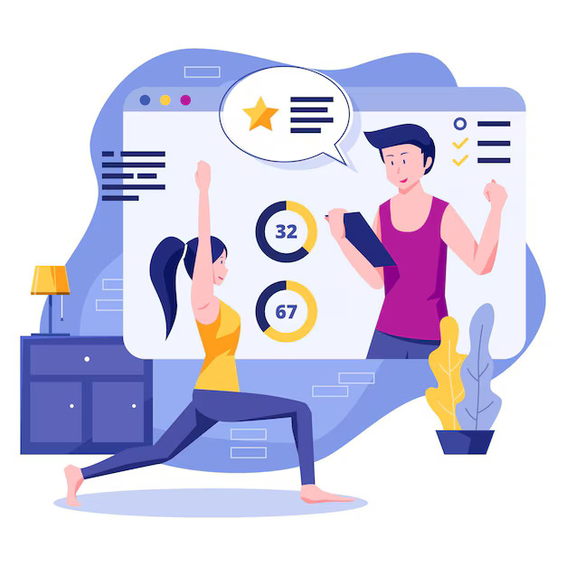
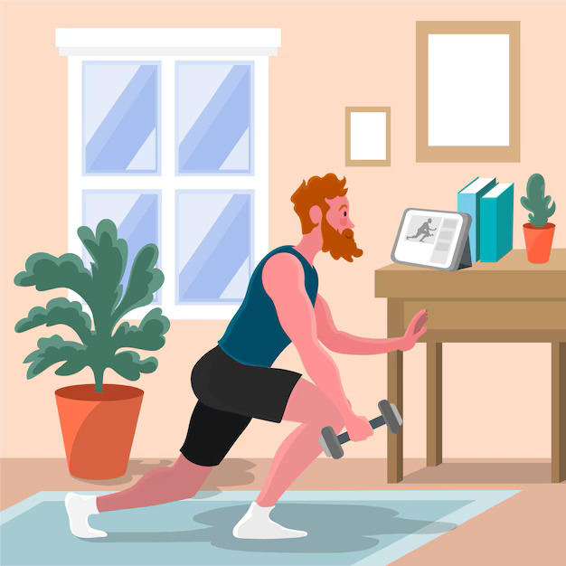
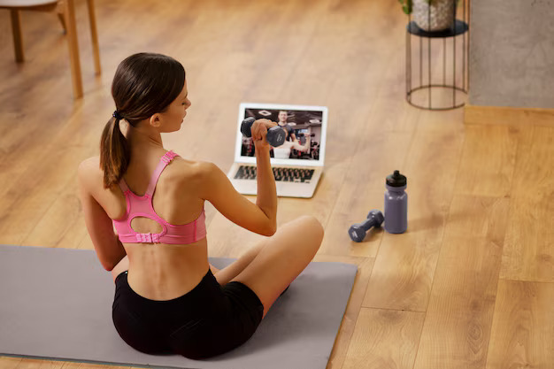
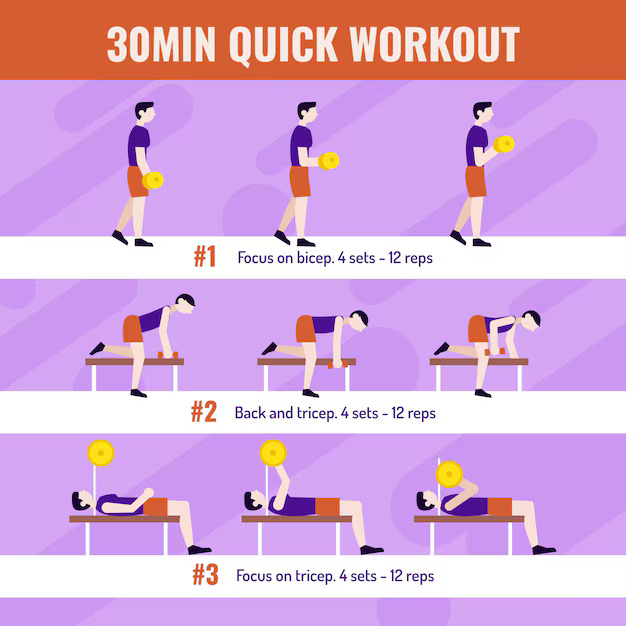

घर पर वर्कआउट्स व्यस्त शेड्यूल के लिए बेहतरीन होते हैं क्योंकि ये लचीलापन और सुविधा प्रदान करते हैं।
- घर पर वर्कआउट के प्रकार

- बॉडीवेट एक्सरसाइज: इनमें कोई उपकरण की जरूरत नहीं होती। इसमें पुश-अप्स, स्क्वाट्स, लंजेस, प्लैंक्स और बर्पीज़ शामिल हैं।
- हाई-इंटेन्सिटी इंटरवल ट्रेनिंग (HIIT): तीव्र व्यायाम के छोटे-छोटे अंतराल और उसके बाद थोड़े आराम के समय। HIIT 15-30 मिनट में किया जा सकता है और कैलोरी जलाने के लिए प्रभावी है।
- योगा और पिलेट्स: लचीलेपन, ताकत और आराम के लिए बेहतरीन। इन्हें कम जगह और उपकरण के साथ किया जा सकता है।
- स्ट्रेंथ ट्रेनिंग: डंबल्स, रेजिस्टेंस बैंड्स या घरेलू सामान जैसे पानी की बोतलों का उपयोग करके मांसपेशियां बनाने वाले व्यायाम करें।
- कार्डियो वर्कआउट्स: इसमें जंपिंग जैक्स, जगह पर दौड़ना, या डांस करना शामिल है। ये दिल के स्वास्थ्य के लिए अच्छे हैं और बिना किसी खास उपकरण के किए जा सकते हैं।
- शेड्यूल बनाना

- नियमिता ही महत्वपूर्ण है: "सप्ताह में 3-5 बार, कम से कम 20-30 मिनट तक व्यायाम करने का लक्ष्य रखें।"
- समय के ब्लॉक: "वर्कआउट्स को उन समयों पर शेड्यूल करें जो आपके लिए सुविधाजनक हों, जैसे सुबह जल्दी, लंच ब्रेक या शाम के समय।"
- रोजाना की दिनचर्या में शामिल करें: "रोजाना की दिनचर्या में व्यायाम को शामिल करें, जैसे काम से पहले एक त्वरित वर्कआउट करना या टीवी के विज्ञापन ब्रेक्स के दौरान व्यायाम करना।"
- सर्वश्रेष्ठ उपयोग

- सर्किट ट्रेनिंग: "अपने वर्कआउट को प्रभावी और दिलचस्प बनाए रखने के लिए एक्सरसाइज को सर्किट में मिलाएं।"
- प्रोग्रेसिव ओवरलोड: "धीरे-धीरे अपने वर्कआउट्स की तीव्रता बढ़ाएं ताकि आप लगातार प्रगति कर सकें।"
- कम से कम उपकरण: "कुछ महत्वपूर्ण उपकरणों में निवेश करें, जैसे रेजिस्टेंस बैंड्स या डम्बल्स का सेट, ताकि आप विविधता जोड़ सकें बिना ज्यादा जगह घेरें।"
- "प्रेरित रहना"

- लक्ष्य निर्धारित करें: "अल्पकालिक लक्ष्य (जैसे, 'मैं इस सप्ताह 3 वर्कआउट्स पूरा करूंगा') और दीर्घकालिक लक्ष्य (जैसे, 'मैं अगले 3 महीनों में अपनी लचीलापन में सुधार करना चाहता हूँ') निर्धारित करें।"
- प्रगति की निगरानी करें: "अपने वर्कआउट्स और सुधार की निगरानी करने के लिए ऐप्स या जर्नल का उपयोग करें।"
- विविधता लाएं: "बोरियत से बचने और खुद को चुनौती देने के लिए नियमित रूप से अपनी दिनचर्या बदलें।"
- "सुरक्षा और पुनर्प्राप्ति"
- वार्म-अप और कूल-डाउन: "चोट से बचने के लिए वार्म-अप से शुरुआत करें और पुनर्प्राप्ति में मदद करने के लिए कूल-डाउन से समाप्त करें।"
- अपने शरीर की सुनें:"जब जरूरत हो, आराम करें और दर्द से न गुज़रे। यदि आपकी कोई मौजूदा चोट या सीमा है, तो व्यायाम को समायोजित करें।"
- "संसाधन"

- ऐप्स और ऑनलाइन वीडियो: बहुत सी मुफ्त और सब्सक्रिप्शन-आधारित ऐप्स और वीडियो उपलब्ध हैं, जैसे Nike Training Club, MyFitnessPal, या फिटनेस के लिए समर्पित YouTube चैनल।
- ऑनलाइन समुदाय: फिटनेस फोरम या सोशल मीडिया ग्रुप्स में शामिल होने से आपको समर्थन और प्रेरणा मिल सकती है।
- वर्कआउट के उदाहरण

- तेज HIIT रूटीन:
- 30 सेकंड के लिए जंपिंग जैक्स
- 30 सेकंड के लिए पुश-अप्स
- 30 सेकंड के लिए हाई नीस
- 30 सेकंड के लिए स्क्वाट्स
- 15-20 मिनट तक दोहराएं
- बॉडीवेट रूटीन:
- 10-15 पुश-अप्स के 3 सेट
- 15-20 स्क्वाट्स के 3 सेट
- 20-30 सेकंड के 3 सेट प्लांक्स
- प्रत्येक पैर के लिए 10-15 लंजेस के 3 सेट
- योगा रूटीन:
- 5 मिनट के लिए सूर्य नमस्कार
- "10 मिनट के लिए डाउनवर्ड डॉग, वॉरियर, और पिजन जैसी पोज़ को करें"
- 5 मिनट की विश्राम या ध्यान